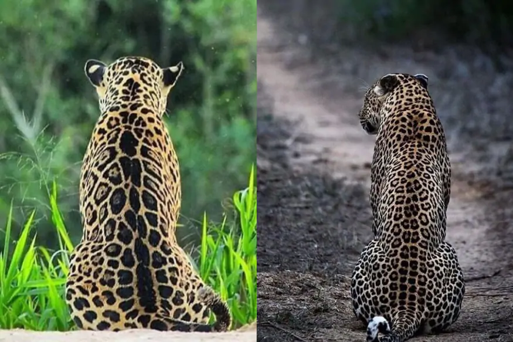
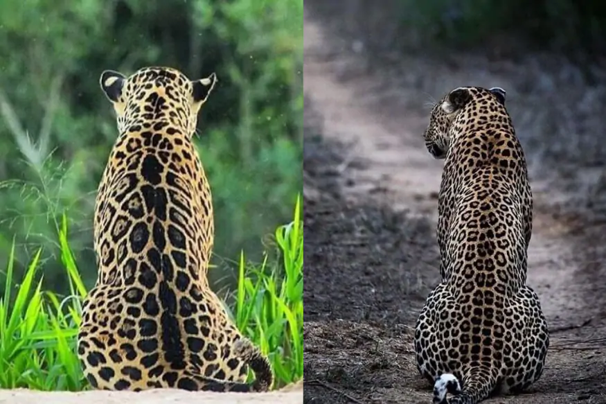

ANIMAL
JAGUAR
The jaguar (Panthera onca) is a large felid species and
the only living member of the genus Panthera native to the Americas.The jaguar is the largest cat species in the New World and
the third largest in the world.
 

SPORTS
CRICKET
Cricket is a bat-and-ball game played between two teams of eleven players on a field at the centre of which is a 22-yard (20-metre) pitch with a wicket at each end,
each comprising two bails balanced on three stumps.
The batting side scores runs by striking the ball bowled at the wicket with the bat (and running between the wickets),
while the bowling and fielding side tries to prevent this (by preventing the ball from leaving the field, and getting the ball to either wicket) and dismiss each batter (so they are "out").